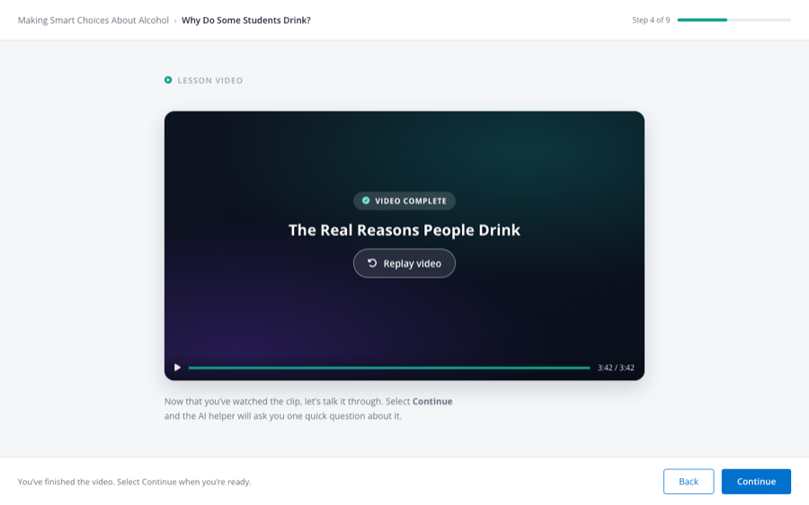
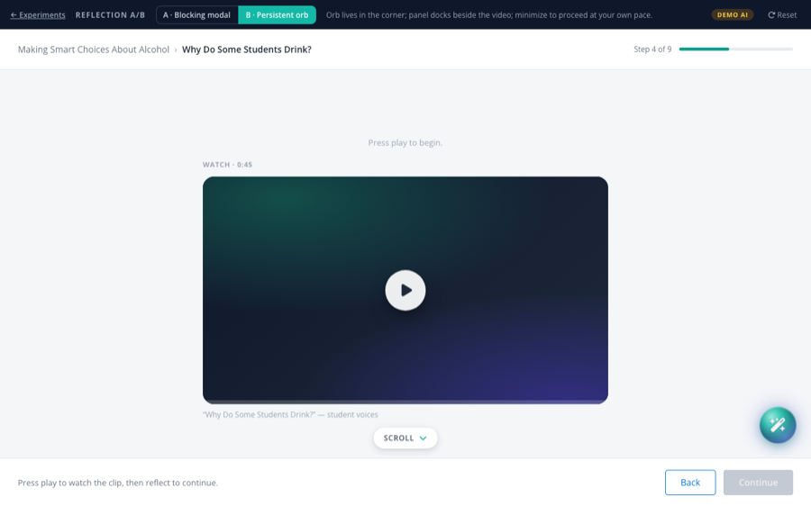
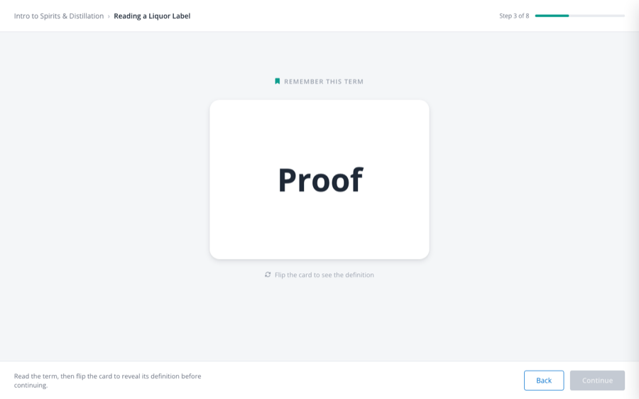
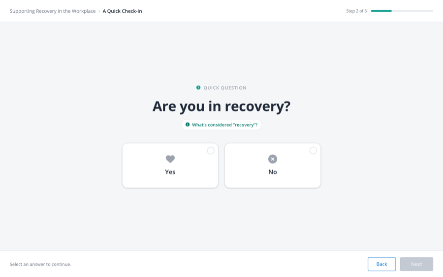
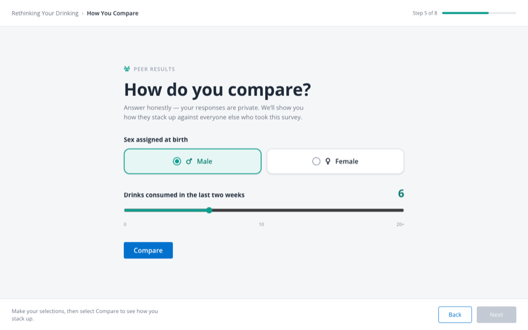
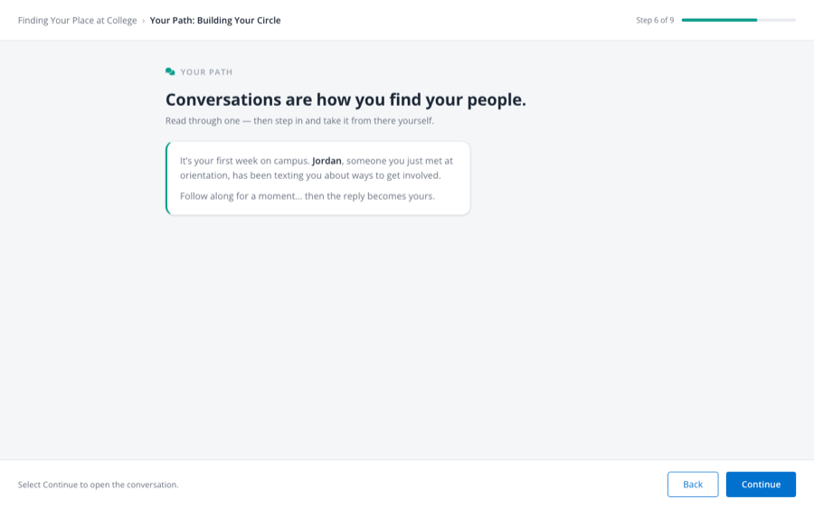
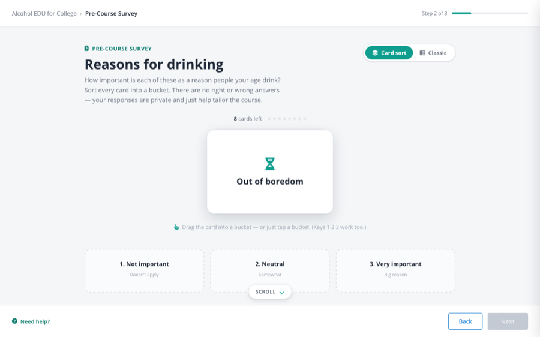
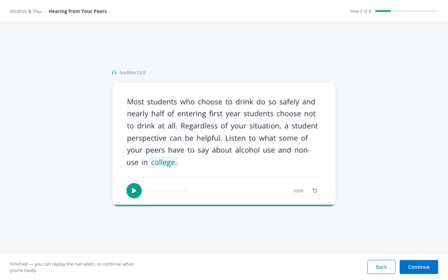
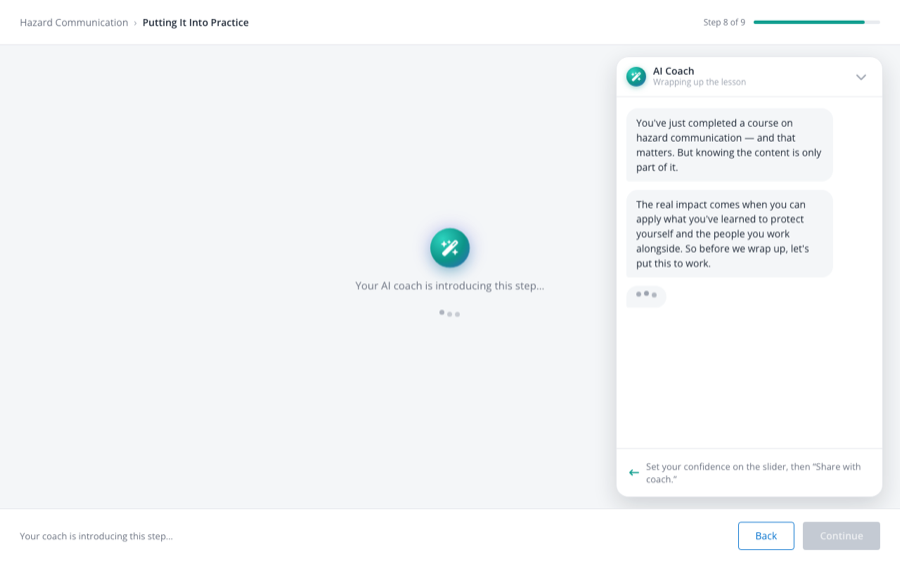
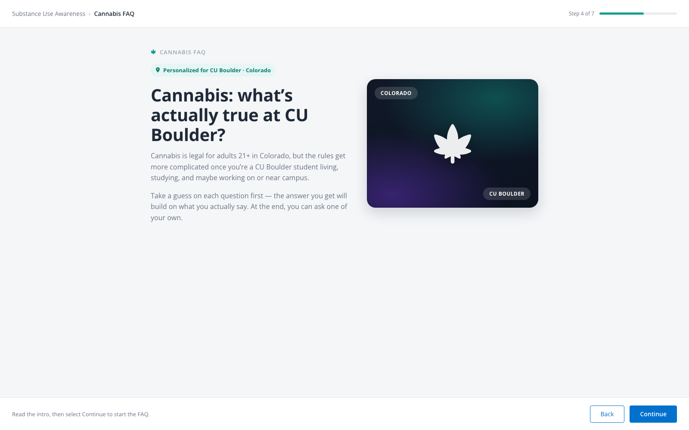

Lesson Presentation Experiments
New ways to present lesson content and check understanding — each one still fits inside the same lesson experience learners already know.
Experiments marked Live AI can also be launched on a real model (Claude) instead of the scripted demo engine — look for the launch option in the experiment's details.
Scenario Simulator
One live-AI engine, four shapes — pick the version (and intro) when you launchWriter Studio — the authoring tool behind these simulations. Content writers fill structured, plain-language fields (the scenario, assessment dimensions, the character's reaction map, the success gate) and publish straight to the Live AI variants. New to it? Learn more ›
Build & authoring specs — the end-to-end flow, and a deep dive on the interaction layer (its six phases, the modes, and the prompts each needs). For product & engineering.
Video Reflection
Same post-video reflection, presented two ways — compared side by side-

Video Reflection A After the training video ends, the learner reflects on it in a short written conversation with an AI: it asks the lesson question, responds to their answer, asks once for more detail if needed, then unlocks Continue once the answer is thorough enough. -

Video Reflection B The same after-video reflection question, shown two different ways for comparison: one pauses the screen with a pop-up the learner must answer before continuing, the other is a small AI assistant that sits beside the still-playing video and can be opened or tucked away. The reflection itself is identical — only the presentation changes.
Basic Interactions
Distinct lesson content types-

Terms to Remember A single key term and its definition on a flip card, with an AI assistant on hand if the learner wants to go deeper. -

Quick Question One question at a time with large, easy-to-tap answer choices, plus an optional “tell me more” for extra context. -

Peer Results A “how do you compare?” moment: the learner answers a couple of quick questions, then sees how their answers stack up against their peers on a simple chart, with a plain-language verdict like “better than most.” -

Conversation Step-In The learner reads a realistic text conversation, then takes it over partway through — practicing how to turn down a party invite gracefully, without losing the friendship, while a peer (Jordan) responds in character. Wraps up with three simple takeaways. -

Matrix Card Sort A more engaging way to run a pre-course survey: instead of rating a long list of items in a grid, the learner sorts each one into “not important,” “somewhat important,” or “very important” by dragging or tapping. Includes a side-by-side comparison against the traditional grid version it replaces. -

Audio Summary Replaces a narrated slide video with just the words on screen: the learner's device reads the text aloud and highlights each word as it's spoken. No video production needed to update the narration — just edit the text. -

Confidence Check A lesson wrap-up where an AI coach asks the learner to rate their confidence with a simple slider, then reacts to their answer and asks two quick follow-up questions — their preferred training format, and the one thing they'd tell a coworker — before unlocking Continue. -

Personalized FAQ A traditional FAQ accordion that's quietly rewritten for the learner in front of it — questions and answers reference their actual school and state. Opening a question first asks for the learner's own guess, then "personalizes" the real answer around what they said. The last item flips the direction: the learner asks a question of their own and gets an answer built for them.